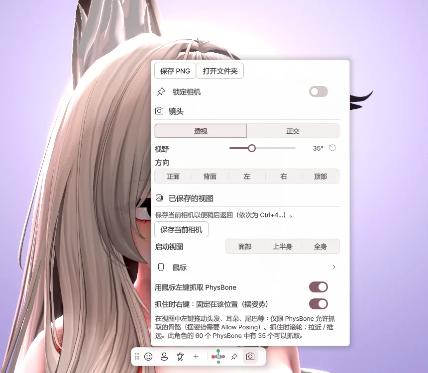

4. 主界面

左侧菜单
| 菜单 | 作用 |
|---|---|
| 菜单 | 角色的 Expression 菜单与手势 → 第 5 章 |
| 设备 | 摄像头、麦克风、追踪 → 第 6 章 |
| 动作 | 面部、身体、手 → 第 7 章 |
| 场景 | 背景、灯光、效果 → 第 8 章 |
| 输出 | 发送到直播软件、屏幕共享 → 第 9 章 |
| 设置 | 窗口、性能、语言、快捷键 → 第 10 章 |
点击面板右上角的 图钉，即可固定面板。
顶部
| 项目 | 作用 |
|---|---|
| 角色名称 | 切换角色。 |
| FPS | 点击可更改帧率。 |
| ⟲ | 姿势僵住或头发缠在一起时，点击即可恢复到初始状态。 |
底部工具栏
| 按钮 | 作用 |
|---|---|
| 面部 · 上半身 · 全身 | 切换相机构图。 |
| + | 保存当前的相机位置。 |
| 锁定相机 | 防止用鼠标移动相机。 |
| 相机 | 打开相机设置。 |

- 保存 PNG — 将不含菜单的画面保存为照片。
- 视野 — 将镜头调广或调窄。
- 已保存的视图 — 直接移动到已保存的相机位置。
- 用鼠标左键抓取 PhysBone — 可以用鼠标抓住头发或尾巴。
鼠标与键盘
| 操作 | 作用 |
|---|---|
| 右键拖动 | 旋转相机 |
| 滚轮拖动 | 移动相机 |
| 滚轮 | 放大 · 缩小 |
| F1 | 隐藏 / 显示菜单 |
| Ctrl + 1 / 2 / 3 | 面部 / 上半身 / 全身 |
| Ctrl + Z | 撤销角色位置的更改 |
抓取 PhysBone
在视图中 左键拖动 头发、耳朵或尾巴，即可拉拽。抓住时 右键点击，就会按当前形状固定；再次抓取同一部分即可解除。
调整角色位置
用视图左侧的 移动 · 旋转 · 缩放 工具移动或旋转角色。点击 ⌂ 即可回到中心。
窗口与托盘
点击窗口的 X 会最小化到托盘，追踪和输出会继续运行。双击托盘图标即可重新打开。